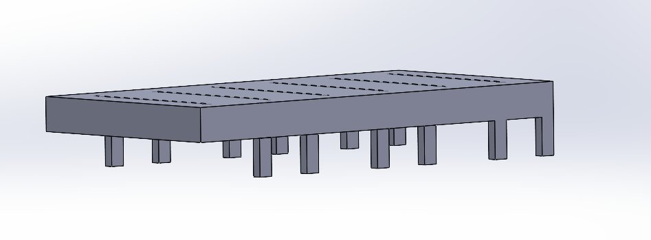
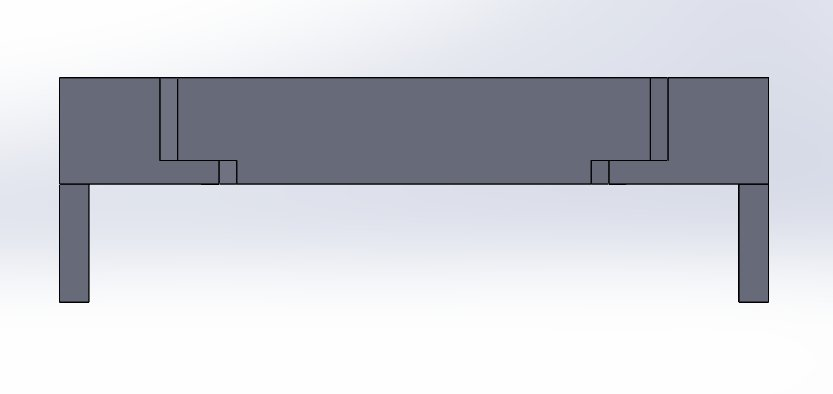

Conducting corrosion-mechanical coupled testing on bioabsorbable magnesium surgical staples to characterize how progressive degradation in simulated gastric fluid affects structural integrity — with direct relevance to bioresorbable cardiovascular implant design.
Bioresorbable implants eliminate the need for a second surgery to remove hardware — the device degrades naturally in the body over time. Magnesium alloys are promising candidates because they are biocompatible, mechanically strong, and degrade at a controlled rate.
For surgical staples specifically, the staple must maintain structural integrity long enough to hold tissue together during healing, then degrade safely. The critical question is: how does corrosion affect the staple's mechanical performance over time? And since the bend is the most stressed region, what are the limits of that geometry?
This research is sponsored by Ethicon — a Johnson & Johnson MedTech company and one of the world's leading surgical device manufacturers.
The test bed is specifically designed to expose only the bent tip of the staple wire to simulated gastric fluid (SGF) — isolating corrosion to the most mechanically critical region. The rest of the wire remains dry.
The wire is held in a V-shape by four contact points, suspending the bent tip precisely over a glass container filled with SGF. This geometry ensures repeatable positioning across all test samples without introducing clamping stresses that would confound the corrosion data.


Left: Isometric view of the corrosion test bed. Right: Section view showing the 4-point V-shape wire support and SGF container below.
Design rationale: Targeting only the bend tip mirrors the clinical failure mode — in vivo, the bent region experiences the highest stress concentration and is where mechanical failure and accelerated corrosion are most likely to initiate. Isolating this region gives us data that's directly relevant to implant performance.
Following corrosion exposure, staples are subjected to tensile stress–strain testing to characterize how degradation has affected mechanical properties. Key measurements include elastic limit, yield behavior, failure point, and failure mode (elastic vs. inelastic regime).
A parallel workstream determines the minimum and maximum bend radius constraints by testing staples bent to varying geometries. This defines the geometric envelope within which the staple can be formed without compromising structural integrity — critical data for the manufacturing process.
The corrosion-mechanical coupling framework used here is directly analogous to how nitinol fatigue and corrosion behavior is characterized in TAVR frames and transcatheter delivery systems. Nitinol — the dominant material in structural heart devices — undergoes similar degradation-performance tradeoffs that must be rigorously characterized before clinical use.
The skills developed here — designing targeted corrosion fixtures, running tensile characterization, and analyzing failure modes in degradable metallic implants — translate directly to the bench-top testing workflows used in cardiovascular device R&D.